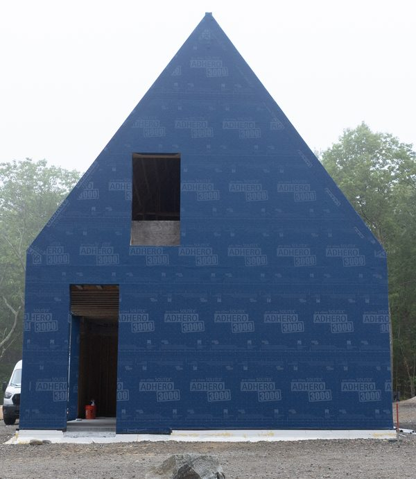
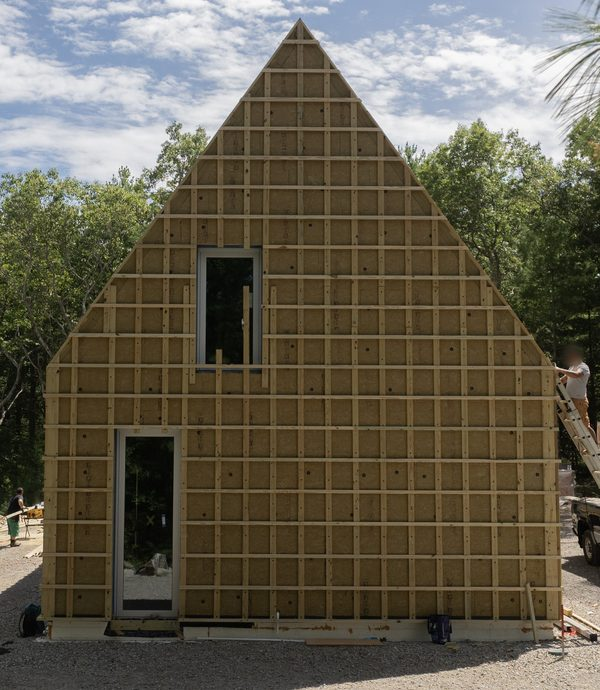
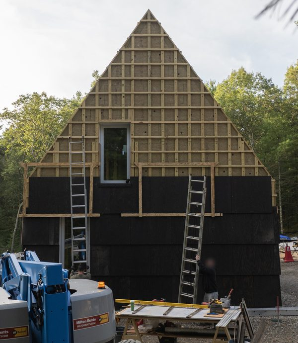
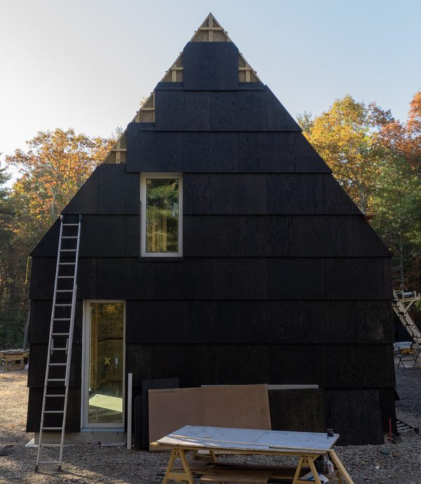
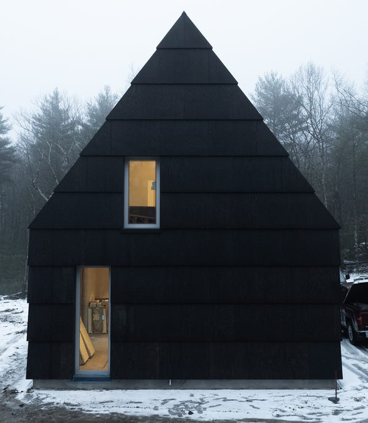

Watch
NS Builders documented the construction of Echo Pond in public, from the first cut of the access road to the finished rooms. Motif Media filmed and photographed the work throughout. This page gathers that record in the order the house was built, followed by a few moments from the place itself.
Vincent Appel and Nick Schiffer on the house-shaped house and its megashingle, a plywood shingle made from a four-by-eight sheet cut in half: why it is that size, how the pine tar finish was developed, and how the corners were resolved.
Photo by Motif Media
Building Echo Pond
Before the house, a road: 1,400 feet through forest and ledge, a culvert across the wetland, a water line to a new hydrant, and at the end the first view of the pond from the house site.
Photo by Motif Media
A quarter mile into the woods, the blasted ledge is backfilled and compacted in lifts, and the site is prepared for a slab that sits on insulation.
Photo by Motif Media
Nick Schiffer and Vincent Appel explain the frost-protected shallow foundation: a raft of concrete insulated horizontally, in place of walls carried four feet below grade.
Photo by Motif Media

The house shape appears: walls and gable framed above the slab.
Photo by Motif Media
With John Deans of 475 Supply: mineral wool board outside the walls and over the roof, so the framing never meets the cold.
Photo by Motif Media
Nine-foot lift-slide units, made as doors, are set as operable windows so the first floor looks to the pond from floor to ceiling.
Photo by Motif Media
The finished first floor, and the detail work that lets the glass slide out of view.
Photo by Motif Media
Nick Schiffer and superintendent Marc Murray walk builder Mark Williams through the house as it nears completion: the pine-tarred shingle and its eighth-inch seams, the drip edge and stone base, the lift-slide glass and polished slab.
Photo by Motif Media
Also from NS Builders:
Photos by Motif Media
A house-shaped house
{kind=link}

June 2025{kind=link}

August 2025{kind=link}

September 2025{kind=link}

October 2025{kind=link}

January 2026Photographs by Motif Media.
The finished house


Photographs courtesy of NS Builders.
From Instagram


The wildlife
Footage by the owners


Penny postcards
In the early twentieth century the pond was Glen Echo Park, a summer resort that day visitors reached by trolley. Penny postcards from those years show the pines and water the house looks onto today.


Postcards, early twentieth century. Public domain.